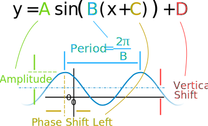
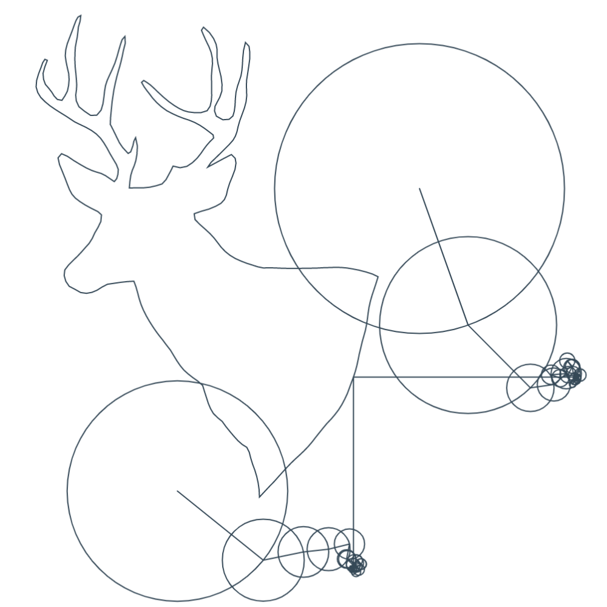
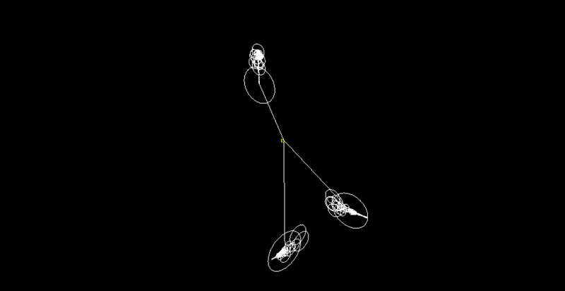

Explanation
"There is order in chaos"
Can we create a drawing machine that takes in any ordered set of 3D points and draws it using epicycles (a sequence of chaotic, rotating circles)?
To solve this, we must do the following:
Step 1. Take our 3D points and create 3 functions from its $x$, $y$, and $z$ components.
drawing $= {(0, 0, 1), (0, 1, 2), (1, 1, 2), (1, 0, 1), ...}$
$x = {0, 0, 1, 1...}$
$y = {0, 1, 1, 0...}$
$z = {1, 2, 2, 1...}$
Step 2. Apply the Fourier Transform to each function. This will allow us to represent each function as a sum of revolving circles and vectors. We will use the discrete version of the transform because computers cannot sum up an infinite number of values.
Step 3. Save the output of the Fourier Transform, which is a set of frequencies, amplitudes, and phase shifts. Visually, this is just a circle.

Step 4. Create three epicycle systems from the output above. Each system controls the $x$, $y$, or $z$ coordinate of the points being redrawn.

Step 5. Start an animation that goes from $t = 0$ to $t = 2*pi$.
For each time step, we sum up all the $A * cis(f * t + phi)$, where $A$ = amplitude, $f$ = frequency, $t$ = time, and $phi$ = phase shift. We then use the real or imaginary component of the sum to create a 3D point, which is plotted.

Step 6.
As the animation progresses, we see the 3 sequences of rotating circles connect to form our original, ordered set of 3D points.
My version extends Fourier Epicycles (which you may have seen in YouTube videos, social media posts, and STEM forums) to 3D space.
The sources below do a much better job explaining the math:
myFourierEpicycles - Amazing visualization and math explanation
3Blue1Brown - Video on what's going on
Please feel free to check out my code and email me if you notice anything incorrect. Thank you😄